地政学
バルセロナはスペインの主要都市でありながら、カタルーニャの自治、言語、独立論、欧州統合、地中海交易が重なる政治都市です。港は南欧と北アフリカをつなぎ、地域主義を国際都市性へ広げる場でもある都市です。

🇪🇸 スペイン / ヨーロッパ / World City Atlas
地中海港、カタルーニャ政治、近代建築、観光、移民、産業、海辺の暮らしが重なる欧州南部の重要都市です。
都市の骨格
港、旧市街、アシャンプラの格子、モンジュイック、ティビダボ、郊外工業地帯が、観光都市である前の生活と産業を支えています。
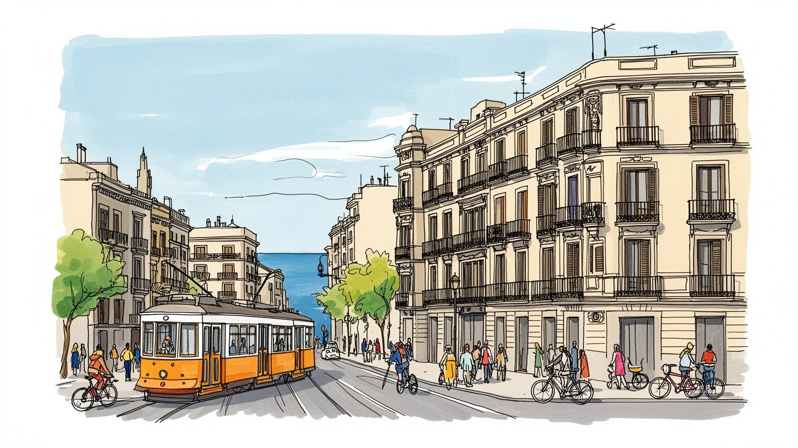
バルセロナはスペインの主要都市でありながら、カタルーニャの自治、言語、独立論、欧州統合、地中海交易が重なる政治都市です。港は南欧と北アフリカをつなぎ、地域主義を国際都市性へ広げる場でもある都市です。
観光だけでなく、港湾物流、自動車、医療、大学、デザイン、見本市、食品、情報産業が都市を動かします。ホテルや飲食の季節労働、清掃、配達、介護、建設も大きく、創造都市の表面を現場労働が今日も支えている街です。
カタルーニャ語、聖家族教会、ゴシック地区、祭礼、人間の塔、カトリック、移民の礼拝所、サッカーが文化の層を作ります。近代建築は観光資源である前に、市民の誇りと政治的な記憶を運ぶ大切な言語でもある都市です。
海辺、市場、広場、バル、地下鉄は住民の生活を支えますが、短期賃貸、家賃上昇、混雑、騒音、暑さが日常を圧迫します。旅の楽しさと住む人の負担が近いため、観光管理は都市の公平さを測る重要な課題にもなる街です。
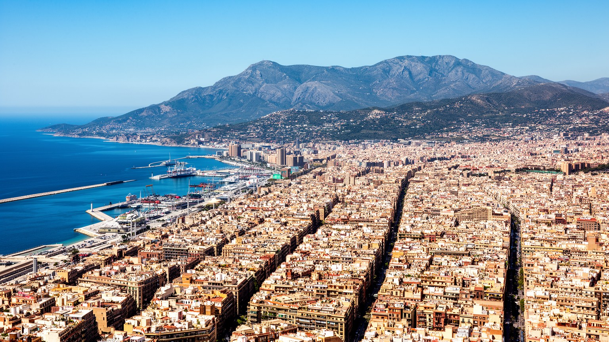
バルセロナの地理は、地中海に開いた港、山側の丘陵、旧市街の密な路地、十九世紀に広がったアシャンプラの格子街区の組み合わせで成り立ちます。ローマ起源の中心と中世の城壁都市は、港と市場を抱えて狭く濃い生活圏を作りました。城壁の外へ計画的に伸びた格子は、交差点の面取り、街区内の中庭、広い通りによって衛生、交通、光を改善しようとした近代都市の実験です。現在の市街地では、その格子に地下鉄、バス、自転車道、店舗、学校、住宅、観光客の流れが重なります。海辺は一九九二年の五輪を契機に工業的な背面から都市の表舞台へ変わり、浜辺、遊歩道、ホテル、港湾施設が近接する空間になりました。ただし海は景観だけではありません。コンテナ、クルーズ、漁港、下水、高潮、暑熱対策が都市の運営に関わります。丘の斜面には眺望と高級住宅があり、低地には観光と商業、郊外には工場と集合住宅が広がります。地形を読むと、バルセロナが小さく歩ける都市であると同時に、港湾、空港、郊外鉄道まで含む広域都市圏であることが分かります。格子の美しさは、均質な都市を意味しません。街区ごとに家賃、緑、騒音、観光圧、学校、移民の店が異なり、同じ碁盤目の中に多くの生活条件が埋め込まれています。だから地図の整然さだけでなく、海風、坂、地下鉄の乗換、歩道の混雑、店先の会話まで一緒に読む必要があります。
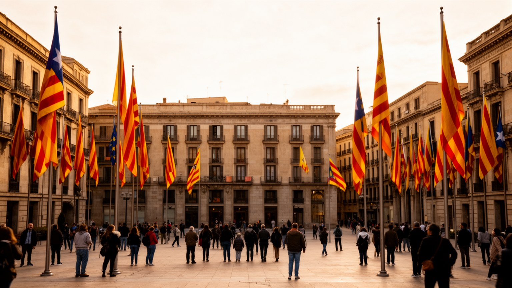
バルセロナはスペイン第二の経済圏の中心であると同時に、カタルーニャ自治の象徴的な首都です。ここで政治を読む時、国会や市庁舎だけを見ても足りません。カタルーニャ語の看板、学校教育、出版、劇場、新聞、祭礼、サッカーの応援、広場のデモが、地域の帰属意識を日々の風景にしています。独立をめぐる運動は、単純な分離願望だけではなく、税制、歴史記憶、言語権、欧州連合、スペイン国家との権限配分をめぐる長い議論の上にあります。賛成と反対の住民は同じ地下鉄に乗り、同じ市場を使い、同じ観光経済に依存するため、政治的な緊張は生活を切り裂きすぎない調整も必要とします。バルセロナの国際性は、地域主義と矛盾しません。むしろ地中海港、大学、移民、見本市、デザイン産業が外へ開くほど、自分たちの言語と制度をどう守るかが問われます。広場は観光客の写真の背景であると同時に、住民が権利や不満を可視化する政治空間です。自治政府、中央政府、市政、EUの判断が住宅、交通、警察、教育、観光規制へ重なり、責任の所在が議論されます。バルセロナの政治性は、旗やスローガンだけではなく、どの言葉で学び、働き、行政窓口へ行けるかという具体的な生活条件に表れます。投票結果や裁判だけでなく、店先の掲示や学校の時間割にも、政治は静かに残ります。行政サービスの言語選択も、住民の安心を左右します。
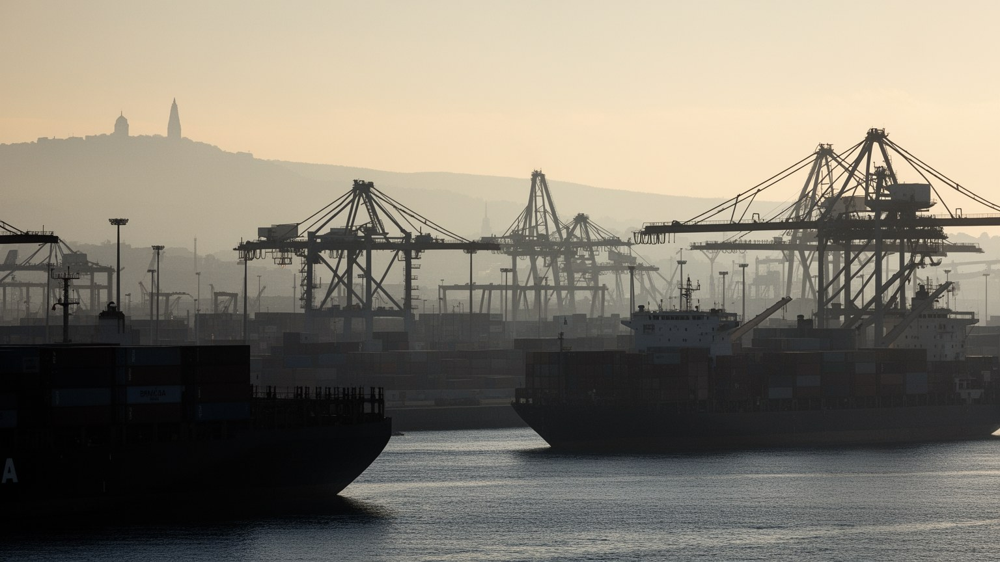
バルセロナの経済は観光の印象が強いですが、都市の厚みは港湾、製造、見本市、研究、医療、教育によって支えられています。港はコンテナ、フェリー、クルーズ、燃料、食品、化学品を扱い、イベリア半島と地中海を結ぶ物流の重要な入口です。背後には自動車、部品、製薬、食品加工、印刷、デザイン、IT、大学研究、国際会議の産業があり、周辺自治体の工場や倉庫と結びつきます。観光客が歩くランブラス通りや海辺の近くで、通関、倉庫管理、船舶代理、トラック運転、展示会設営、清掃、警備の仕事が都市を裏側から動かします。創造都市のイメージは、デザイナーや建築家だけでは成立しません。ホテルのリネン、レストランの仕入れ、展示会の搬入、病院の夜勤、大学の研究支援、配達員の移動が、都市の稼ぐ力を日々支えます。港湾の拡張やクルーズ船の増加は雇用と収入を生む一方、大気汚染、交通、海辺の土地利用、労働条件をめぐる対立も招きます。バルセロナの産業を読むには、ガウディ建築の周辺だけでなく、港のゲート、郊外の工業団地、展示場、病院、大学キャンパスまで見る必要があります。経済の強さは、観光が減った時にも都市を支える多様な仕事が残るかで測られます。若い専門職の職場と低賃金の現場が同じ都市にあるため、産業政策は住宅と交通の問題から切り離せません。技能訓練や通勤費も競争力の一部です。
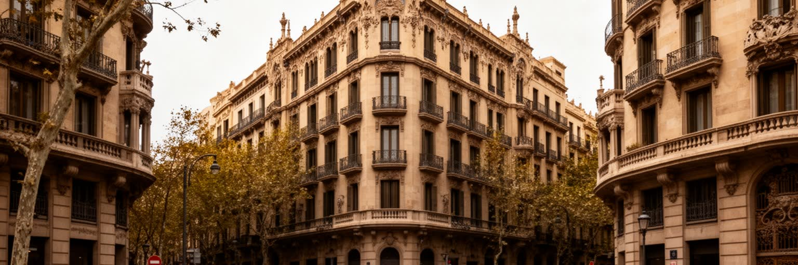
バルセロナの建築は、サグラダ・ファミリア、カサ・ミラ、カサ・バトリョ、グエル公園だけで語ると観光名所の列になります。しかしモデルニスモは、産業化で富を得た市民階級、カタルーニャ文化の表現、職人技、宗教的想像力、都市拡張の時代精神が重なった運動でした。曲線やタイルの華やかさは、地域の素材、工芸、言語意識を都市の表面へ刻む方法でもありました。アシャンプラの街区は美しい格子であると同時に、換気、日照、移動、緑地、公共衛生を考えた社会的な計画でしたが、現実には投機や交通量の増加で理想からずれた部分も多いです。近年のスーパーブロックや歩行者空間の整備は、車中心の街路を住民の場所へ戻そうとする試みであり、騒音、空気、子どもの遊び場、近隣商業を同時に扱う政策です。建築観光は都市に大きな収入をもたらしますが、名所周辺では行列、短期賃貸、土産物店化、日常店舗の退出も起きます。建築を読む時は、外観の美しさだけでなく、誰が建て、誰が維持し、誰がその周辺に住み続けられるのかを見る必要があります。バルセロナの都市計画は、過去の芸術作品ではなく、観光、交通、住宅、気候適応をめぐる現在の交渉として続いています。街路樹、ベンチ、日陰、学校前の安全まで見れば、建築の価値は住民の使いやすさで測られます。修復職人や管理人の仕事も、都市の美観を日々支える重要な労働です。
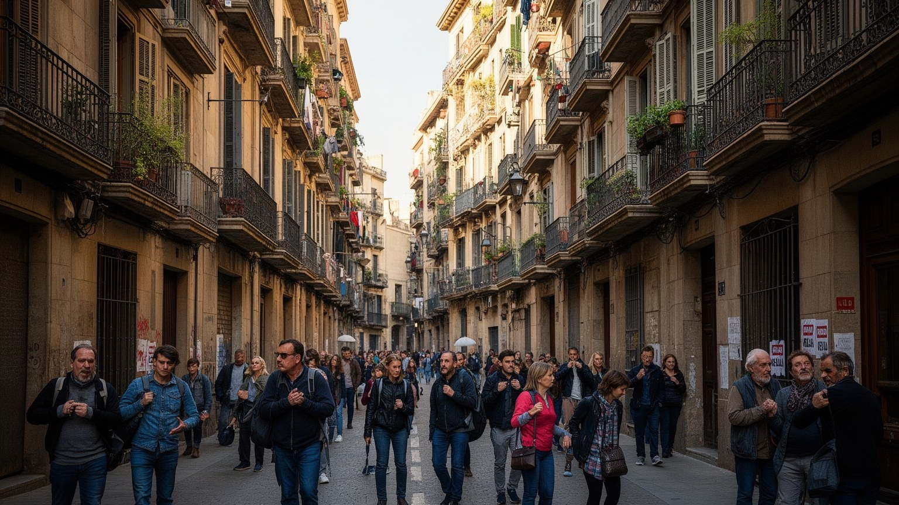
バルセロナは欧州でも特に観光圧の高い都市であり、その成功が住民の暮らしを強く揺らしています。サグラダ・ファミリア、ゴシック地区、ボケリア市場、海辺、カンプ・ノウ、美術館、クルーズ港は世界中の旅行者を引きつけ、ホテル、飲食、案内、交通、小売、清掃、イベント業に収入をもたらします。一方で、短期賃貸の増加、家賃上昇、夜間の騒音、歩道の混雑、土産物店化、地元向け商店の減少は、旧市街や人気地区の生活を難しくします。住民にとって市場は写真を撮る場所ではなく、食材を買い、近所の人と会う生活インフラです。広場は休む場所であり、子どもが遊ぶ場所であり、観光客の流れを受け止める緩衝地でもあります。観光規制を求める声は、訪問者を拒む感情だけではありません。都市が宿泊施設へ変わりすぎれば、学校、薬局、修理店、日常のバルが消え、地域社会が薄くなるという危機感です。観光業で働く人の多くも、低賃金や季節労働、遠い通勤に直面します。バルセロナ観光を持続させるには、訪問者数の管理、住宅政策、港湾の環境対策、公共交通、労働条件、地域商業の保護を一体で考える必要があります。美しい街を楽しむことと、そこに住む人が普通に暮らせることは、対立ではなく同時に守るべき条件です。宿泊税や規制の議論も、街の収入を誰の生活改善へ戻すかという問いにつながります。
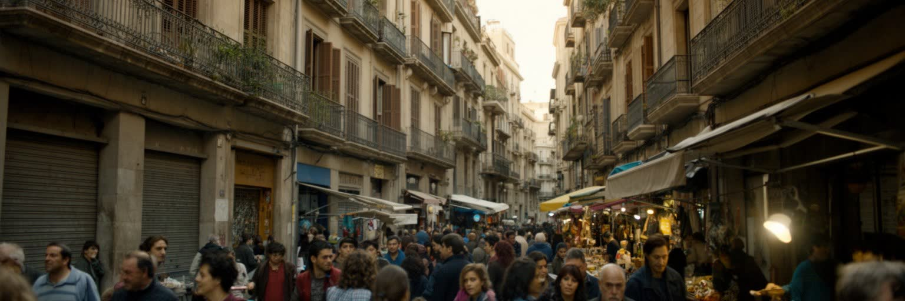
バルセロナの人口構成は、スペイン国内の移動だけでなく、ラテンアメリカ、北アフリカ、南アジア、中国、東欧、西アフリカからの移民によって大きく変わってきました。旧市街のラバル、郊外の集合住宅地、港に近い地区、大学周辺には、多言語の商店、食料品店、礼拝所、美容室、送金サービス、学校が並び、都市の生活文化を更新しています。移民は観光とサービス産業を支えるだけでなく、介護、建設、清掃、配達、物流、飲食、家庭内労働、医療補助、大学研究にも関わります。ですが在留資格、住居差別、低賃金、言語、行政手続き、学校での支援不足は、生活を不安定にします。カタルーニャ語とスペイン語の二言語環境は、地域の文化を守る力である一方、新しく来た人にとっては学ぶべき制度の層を増やします。地域の図書館、学校、医療センター、教会、モスク、NPOは、情報と相談の窓口として重要になります。移民地区は外から治安や貧困の問題として語られがちですが、実際には安い食堂、家族経営の店、子どもの遊び、祭り、相互扶助が都市の柔軟性を作っています。多文化性は観光パンフレットの装飾ではなく、隣人として顔を覚え、言葉を調整し、同じ住宅難や仕事の不安に向き合う過程で根づきます。バルセロナの未来は、新しく来た人を労働力としてだけでなく、市民として扱えるかにかかっています。近隣の信頼は、行政の言葉より先に学校や店先で育つことも多いです。
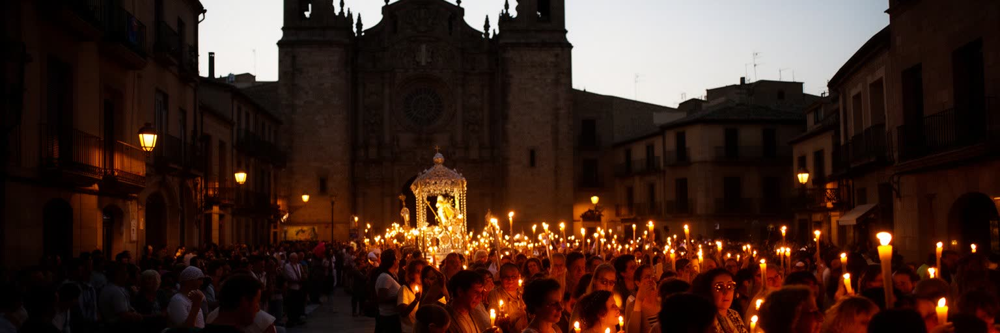
バルセロナの宗教景観は、巨大な聖堂だけでなく、地域の教会、修道院、墓地、移民の礼拝所、世俗的な祭礼の中に広がっています。サグラダ・ファミリアは世界的な観光名所であると同時に、贖罪教会として祈りと建設の時間を重ね続ける場所です。ゴシック地区の大聖堂、サンタ・マリア・デル・マル、旧市街の小さな礼拝堂は、海商、職人、地域共同体の記憶を抱えます。カトリックの影響は弱まった面もありますが、祝日、葬送、結婚、慈善、学校、芸術の語彙には今も残ります。カタルーニャの祭礼では、人間の塔、巨人人形、火祭り、地域の守護聖人の行列が、信仰、身体、政治、観光を結びつけます。さらにイスラム教、福音派教会、正教会、仏教、ヒンドゥー教、シーク教など、移民による信仰空間も増えています。宗教は過去の遺産に閉じず、孤独な高齢者、移民家族、低所得者への支援や、食のルール、葬送、子どもの教育をめぐる日常の課題にも関わります。観光客が聖堂を建築作品として見る時、その背後でミサの準備、清掃、寄付、地域相談が続いています。祭礼は街をにぎやかにするだけでなく、住民が同じ通りを共有し、世代をつなぐ機会でもあります。信仰と祭りを見ることで、バルセロナの都市文化が芸術鑑賞だけではなく、生活の暦として続いていることが分かります。宗教施設は、災害や貧困の時に相談先となる静かな社会基盤でもあります。
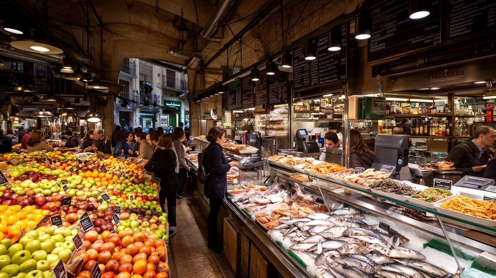
バルセロナの食文化は、地中海の食材、カタルーニャ料理、市場、バル、移民の店が重なってできています。パン・コン・トマテ、魚介、米料理、豆、野菜、オリーブ油、ワイン、菓子、惣菜は、観光客の楽しみである前に、家庭と職場の食事を支える基礎です。ボケリア市場は有名ですが、市内にはサンタ・カテリーナや地区ごとの市場があり、近所の買い物、会話、季節の感覚を残しています。市場が観光地化すると、写真向けの軽食や土産物が増え、住民が日常の買い物をしにくくなることもあります。バルは小さな飲食店であると同時に、仕事帰りに立ち寄り、近所の情報を交換し、サッカーを見て、世代や階層がゆるく交わる公共空間でもあります。移民の食堂や食料品店は、故郷の味を支えるだけでなく、都市全体の味覚を広げます。外食産業の背後には、早朝の仕入れ、調理、皿洗い、配達、清掃、低賃金の長時間労働があります。食の豊かさを語るなら、料理名だけでなく、誰が市場で働き、誰が厨房に立ち、誰が家賃の上昇で店を閉めるのかも見る必要があります。夜の広場では食器の音、海風、歌声、スクーターの音が混じり、食は都市の時間を感じる入口にもなります。地元紙やラジオの店評も会話を動かします。昼食の長さや夕食の遅さも、家族、仕事、気候に合わせた街の時間感覚を示しています。
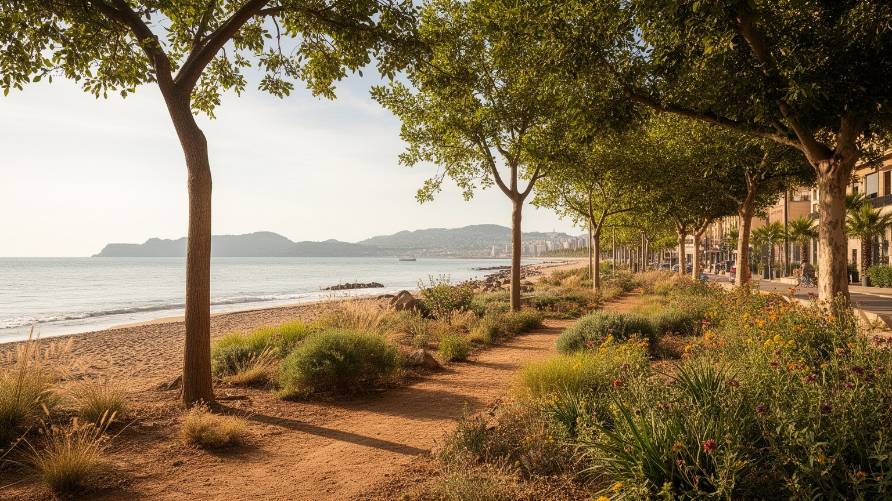
バルセロナの気候は、明るい海辺、乾いた夏、穏やかな冬という魅力で語られますが、近年は熱波、水不足、豪雨、海面上昇、空気の質が都市政策の中心課題になっています。夏の暑さは観光客にとって休暇の条件でも、屋外で働く清掃員、配達員、建設作業員、警備員、露店、介護職には健康リスクです。古い集合住宅では断熱や冷房が不十分な部屋もあり、高齢者や低所得世帯ほど負担が大きいです。地中海地域の干ばつは水道、緑地、観光施設、港湾、家庭の節水へ影響し、都市は遠くの流域や貯水池にも依存しています。豪雨時には旧市街の路地、地下鉄、低地の道路、海辺の施設が弱点になります。クルーズ船や車の排出、港湾活動、観光バスは大気汚染の議論にも関わります。スーパーブロック、街路樹、日陰、歩行者空間、自転車道、公共交通の改善は、単なる都市デザインではなく、暑さと汚染を減らす気候適応策でもあります。海辺の美しさは、砂浜の維持、下水処理、波浪対策、港湾との調整によって支えられます。気候変動は、観光の快適さだけでなく、住民が夏をどう生き延びるかという生活問題です。バルセロナが地中海都市として魅力を保つには、涼しさ、水、移動、住宅を公共財として扱う視点が欠かせません。日陰の少ない広場や冷房のない部屋を減らすことも、気候政策の具体的な仕事です。給水場所や避暑空間の配置も、公平さを示す指標になります。
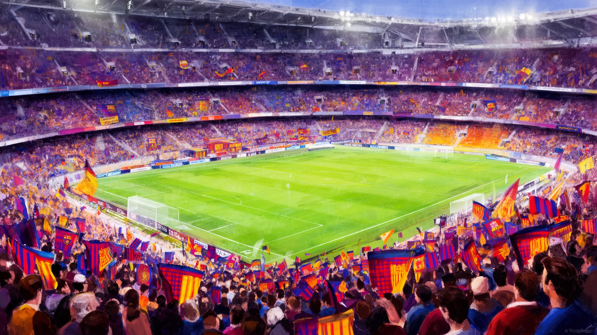
バルセロナでサッカーを読むことは、娯楽の人気を確認するだけではありません。FCバルセロナは競技クラブであると同時に、カタルーニャの言語、自治、民主化、国際的なブランド、地域の誇りを背負う象徴として語られてきました。試合の日には地下鉄、バル、家庭、広場、観光客の動線が変わり、都市全体が一つの時間に合わせて動きます。クラブの成功は世界中のファンとスポンサーを呼び、スタジアム見学、商品販売、メディア、飲食、宿泊にも経済効果を生みます。しかし商業化が進むほど、地元住民がチケットを手にしにくくなり、クラブが誰のものかという問いも強まります。サッカーは階層や出身を越えて人を結ぶ一方、男性中心の文化、過度な消費、観光商品化の問題も抱えます。女子サッカーの成長や地域クラブの活動は、スポーツ文化をより広い市民のものへ変えつつあります。バルセロナの公共文化はサッカーだけでなく、図書館、美術館、音楽祭、地域センター、学校、ビーチ、公園にも広がります。ですがサッカーほど、政治的な記憶と日常の熱気を同時に集める場所は少ないです。試合後の歓声、敗戦後の沈黙、旗の色、歌の言葉は、都市の帰属意識を街路へ流し出します。クラブを通じて見ると、バルセロナは観光都市である前に、住民が自分の物語を共有し続ける都市であることが見えてきます。近所の小さな競技場や学校の練習も、同じ文化の根を支えています。
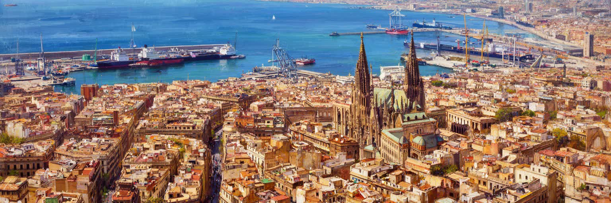
バルセロナは、美しい建築と海辺の休暇都市として記憶されやすいです。しかしその印象だけでは、地中海港、カタルーニャ政治、移民の労働、住宅難、観光圧、気候リスク、郊外の工業と集合住宅を見落とします。ガウディの建築は都市を世界へ開く強い記号ですが、その周囲で暮らす住民には、家賃、騒音、混雑、夏の暑さ、通勤、学校、言語の問題があります。港と空港は国際性を高める一方、排出、土地利用、クルーズ観光の負担を生みます。カタルーニャ語と自治の問題は、政治的な旗だけでなく、学校、行政、文化、メディア、近隣の会話にまで浸透しています。市場やバルは温かい日常の象徴ですが、観光化と物価上昇で住民が使いにくくなる危険もあります。バルセロナの魅力は、芸術、海、食、サッカー、都市計画が歩ける距離にまとまる密度にあります。課題は、その密度を観光と投資が消費しすぎないよう調整することにあります。都市を総合的に読むなら、旧市街、アシャンプラ、港、海辺、郊外、丘の住宅地を一つの地図に置き、誰が得をし、誰が移動を迫られ、誰が働いているのかを見る必要があります。バルセロナは完成した都市作品ではなく、住民、訪問者、労働者、行政が毎日交渉しながら使い続ける地中海の生活都市です。その緊張を含めて見る時、街の美しさは消費の対象ではなく、守るべき共同の条件として立ち上がります。